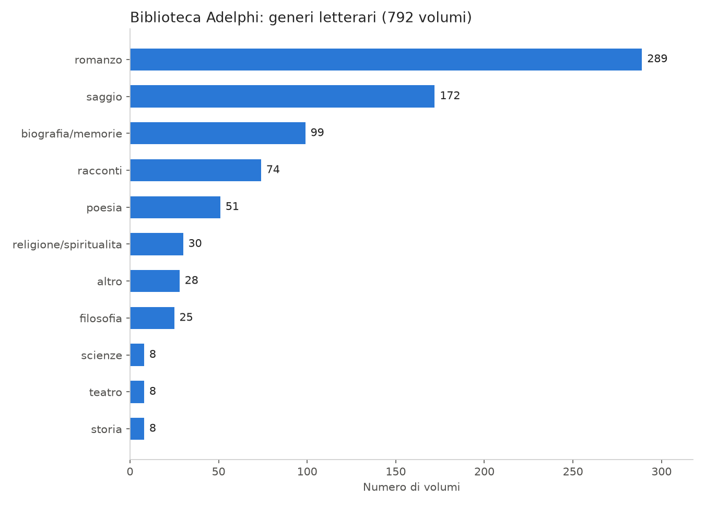
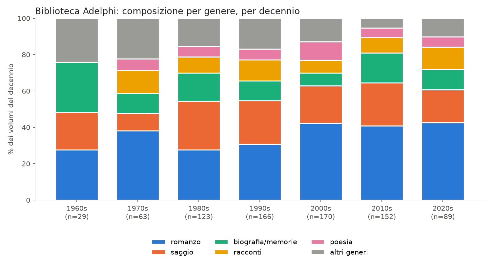
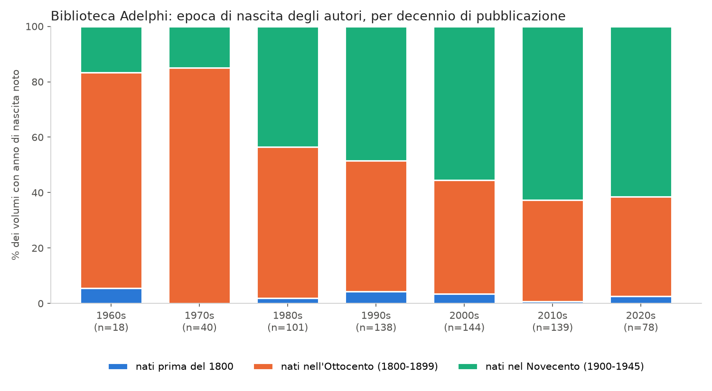
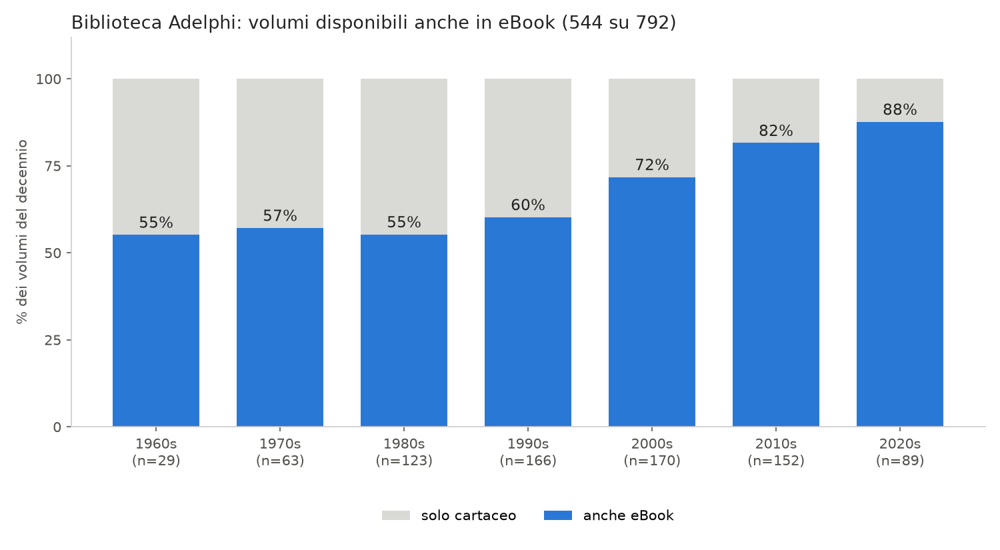
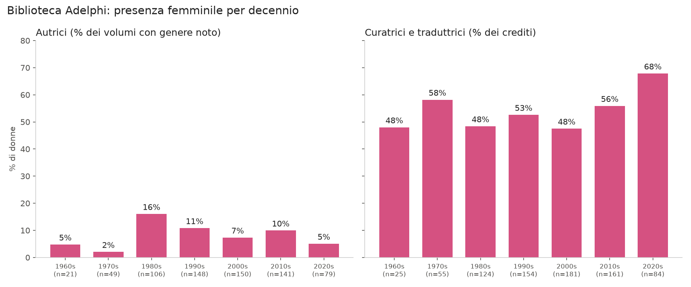
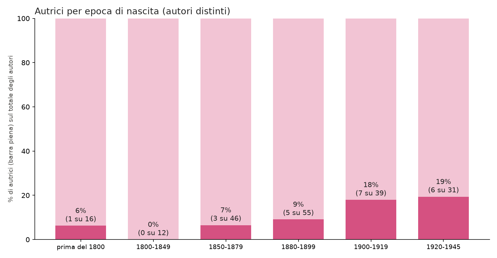
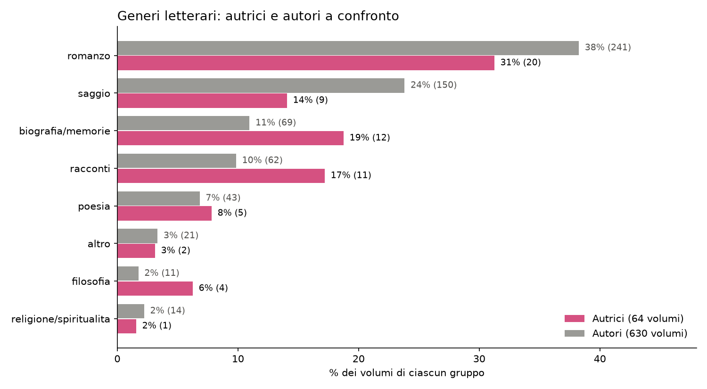
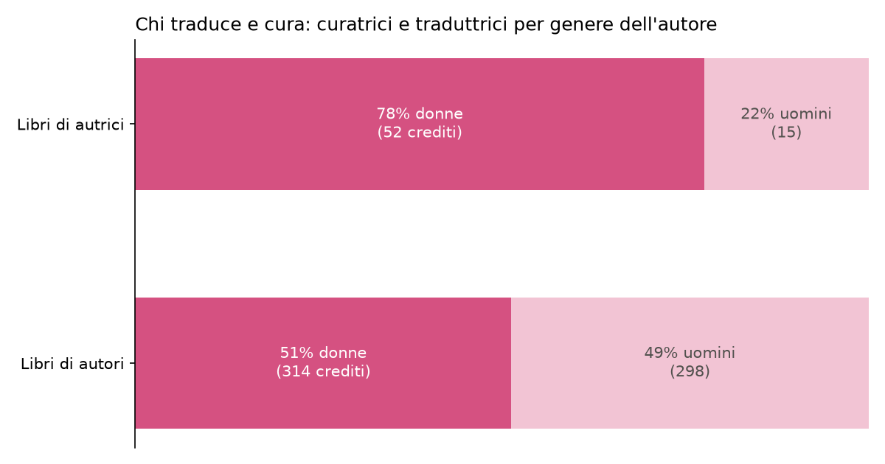

Interrogare un catalogo, analizzarne la biblioteca ed esplorare il mondo Adelphi con modelli generativi.
Questa pagina raccoglie le analisi sulla Biblioteca Adelphi. I dati sono stati raccolti da adelphi.it con uno scraping automatico e arricchiti con Wikipedia (biografie degli autori) e con un modello linguistico (genere letterario e temi di ogni volume). Lo scopo pratico è aiutare a orientarsi in un catalogo e a trovare dove procurarsi le opere.
| Volumi nel catalogo | 792 |
|---|---|
| Periodo (anno dell'edizione Adelphi) | 1965-2026 |
| Autori distinti | 275 |
| Volumi anche in eBook | 544 (69%) |
| Volumi di autrici (genere noto) | 64 su 694 (9.2%) |
| Autrici distinte | 23 |
| Curatrici e traduttrici (crediti classificati) | 418 su 784 (53%) |
| Città di nascita più rappresentata | Liegi (66 volumi) |
| Schede qualitative (LLM) | 792 |

Generi letterari più rappresentati (etichette prodotte dal modello).

Generi letterari per decennio di edizione.

Epoca di nascita degli autori: classici e contemporanei.

Volumi disponibili anche in eBook, secondo l'edizione Adelphi.
Le donne sono poche tra chi scrive, ma più della metà tra chi traduce e cura. Tra gli autori nati più tardi la quota di donne cresce, ma il catalogo Adelphi, guardando agli anni di pubblicazione, non registra questa crescita: Adelphi attinge molto ai classici consacrati, in maggioranza uomini (è un'ipotesi, non un risultato).

Presenza femminile per decennio: autrici e curatrici/traduttrici.

Quota di autrici per epoca di nascita (autori distinti).

Generi letterari: autrici e autori a confronto.

Chi traduce e cura: le autrici sono affidate più spesso a traduttrici.
Elenco di tutti i volumi di autrici, con link alla scheda su adelphi.it: percorso_autrici.html.
Generato automaticamente dallo script componi_report.py.
I dati sono stati raccolti per finalità didattiche e potrebbero contenere imprecisioni.
La verifica e l'interpretazione dei risultati restano responsabilità del lettore.